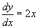
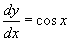

Suppose we have an equation like

and want to find a solution. Equations with derivatives are called differential equations and solving them means finding a function that satisfies the equation. In this case, y = f (x) = x² + C provides the family of solutions. If we also knew that y = 3 when x = 0, then we'd know that y = x² + 3 is the specific solution. This applet explores solutions to differential equations.| See About the calculus applets for operating instructions. |
The initial applet shows the graph of the solution to The gray curve shows the solution that passes through the point (0,0), while the magenta curve shows the solution through the point (0,3), which is the example cited above. You can change the point (called the initial condition) which determines the specific member of the family of solutions by typing into the x and y boxes, moving the sliders, or click-dragging the magenta point on the graph. In particular, set x = 0 and move the y slider, noticing what happens to the graph. Is this what you expect?
Now set y = 0 and move the x slider. What happens to the graph? You might have expected the graph to move right and left, but in fact it moves up and down. This is because the family of solutions are all just vertically displaced parabolas; moving the initial condition point horizontally picks out a different vertically-displaced parabola. In particular, set x = 1 and y = -1. What is the equation for the resulting solution? Solve this by plugging the coordinates of the point into the general solution to find C:
Note: on this graph, zooming with the mouse is disabled, to prevent accidental zooms when trying to click/drag the point. Panning with the mouse is supported (with right click on Windows/Linux systems and option-click on Macintosh systems).
Select the second example from the drop down menu, showing

Move the sliders or drag the point to see various specific solutions. As above, if we have a specific x,y pair that we want the solution to pass through, we just substitute those values into the general solution:You can type in your own right-hand side for the differential equations and press Enter to graph the solution. Note that functions with vertical asymptotes will cause problems, partly due to the specific algorithms that the software uses to graph the solution, but also due to the infinities that can result from such asymptotes (we'll see more about this later). Note that if you zoom out, you might see that the curves abruptly stop; this is an artifact of the algorithm used to draw the solutions (the curves actually should keep going).